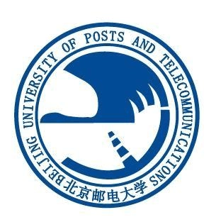

Dayuan Fu (傅大源)M.S. Student
Dept. of Artificial Intelligence |
 |
About
I am Dayuan Fu, a graduate student at PRIS-NLP Group at Beijing University of Posts and Telecommunications (BUPT), supervised by Prof. Weiran Xu. I visited TsinghuaC3I group from 2022.10 to 2024.9. My research interests primarily focus on LLM reasoning, planning, and decision-making ability (in Agent), which can make LLM more universal (i.e. AGI). I have published several papers at prominent NLP conferences, including EMNLP, CIKM, and NAACL.
News
- [2024-09] Two papers have been accepted by EMNLP 2024!
- [2024-03] Two papers have been accepted by NAACL 2024!
- [2023-08] One paper has been accepted by CIKM 2023!
- [2024-02] One paper have been accepted by NAACL 2024!
- [2022-10] One paper has been accepted at the SereTOD 2022 Workshop, EMNLP 2022!
- [2022-09] Achieved the 1st rank on SereTOD 2022 track 2, EMNLP 2022!
Experiences
Academia- [2023.9 - Now] M.S. at Beijing University of Posts and Telecommunications
- [2019.9 - 2023.6] B.S. at Beijing University of Posts and Telecommunications
- [2022.9 - 2023.9] Visiting student at TsinghuaC3I, Tsinghua University
- [2024.1 - Now] Meituan, NLP Center, Research Intern on Agent and data synthesis.
Featured Preprints
-2024-AgentRefine: Enhancing Agent Generalization through Refinement Tuning
Dayuan Fu, Keqing He, Yejie Wang, Wentao Hong, Zhuoma Gongque, Weihao Zeng, Wei Wang, Jingang Wang, Xunliang Cai, Weiran Xu
ICLR 2025 Submission. [paper]
PreAct: Prediction Enhances Agent's Planning Ability
Dayuan Fu, Jianzhao Huang, Siyuan Lu, Guanting Dong, Yejie Wang, Keqing He, Weiran Xu
Arxiv [paper] [blog]
CS-Bench: A Comprehensive Benchmark for Large Language Models towards Computer Science Mastery
Xiaoshuai Song, Muxi Diao, Guanting Dong, Zhengyang Wang, Yujia Fu, Runqi Qiao, Zhexu Wang, Dayuan Fu, Huangxuan Wu, Bin Liang, Weihao Zeng, Yejie Wang, Zhuoma GongQue, Jianing Yu, Qiuna Tan, Weiran Xu
Arxiv [paper] [website] [code] [dataset] [blog]
What Composes Embodied Agent Performance? A Comprehensive Study of Capability Mixture for Agent Tuning
Dayuan Fu, Keqing He, Guanting Dong, Chao Wang, Zhuoma GongQue, Jianzhao Huang, Heyang Xu, Zhexu Wang, Muxi Diao, Yejie Wang, Zhengyang Wang, Jingang Wang, Xunliang Cai, Weiran Xu
Under review
Selected Publications
(* denotes equal contributions)-2024-
MSI-Agent: Incorporating Multi-Scale Insight into Embodied Agents for Superior Planning and Decision-Making
Dayuan Fu, Biqing Qi, Yihuai Gao, Che Jiang, Guanting Dong, Bowen Zhou
EMNLP 2024 Main [paper]
How Do Your Code LLMs Perform? Empowering Code Instruction Tuning with High-Quality Data
Yejie Wang*, Keqing He*, Dayuan Fu*, Zhuoma Gongque, Heyang Xu, Yanxu Chen, Zhexu Wang, Yujia Fu, Guanting Dong, Muxi Diao, Jingang Wang, Mengdi Zhang, Xunliang Cai, Weiran Xu
EMNLP 2024 Main [paper]
On Large Language Models' Hallucination with Regard to Known Facts
Che Jiang, Biqing Qi, Xiangyu Hong, Dayuan Fu, Yang Cheng, Fandong Meng, Mo Yu, Bowen Zhou, Jie Zhou
NAACL 2024 Main [paper]
DivTOD: Unleashing the Power of LLMs for Diversifying Task-Oriented Dialogue Representations
Weihao Zeng*, Dayuan Fu*, Keqing He, Yejie Wang, Yukai Xu, Weiran Xu
NAACL 2024 Findings [paper]
A Multi-Task Semantic Decomposition Framework with Task-specific Pre-training for Few-Shot NER
Guanting Dong, Zechen Wang, Jinxu Zhao, Gang Zhao, Daichi Guo, Dayuan Fu, Tingfeng Hui, Chen Zeng, Keqing He, Xuefeng Li, Liwen Wang, Xinyue Cui, Weiran Xu
CIKM 2023 (Oral). [paper] [code]
Semi-supervised knowledge-grounded pre-training for task-oriented dialog systems
Weihao Zeng, Keqing He, Zechen Wang, Dayuan Fu, Guanting Dong, Ruotong Geng, Pei Wang, Jingang Wang, Chaobo Sun, Wei Wu, Weiran Xu
SereTOD 2022 Workshop, EMNLP 2022, the 1st Award on SereTOD Challenge 2022 track 2 [paper]
Honors & Awards
- Excellent First-class Scholarship for Master Students, BUPT., 2023
- the 1st Award on SereTOD Challenge 2022 track 2 , 2022
- National Scholarship(Top 1%) , 2021
- First Prize in The Chinese Mathematics Competitions(Three times) , 2020,2021,2022
Services
Reviewer for:- ICLR 2025
- ACL ARR 2024 August
- ACL ARR 2024 June
总访问量次
总访客数人次